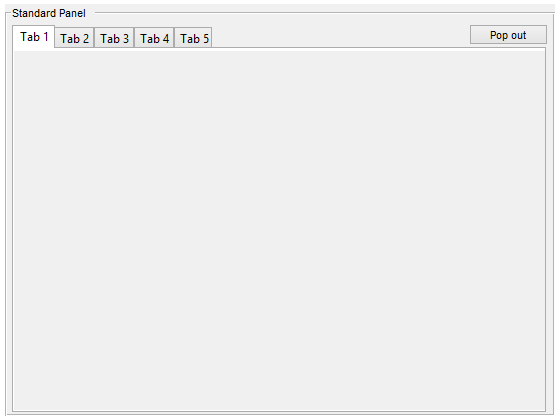

Contents
% Parent = figure; % Grid = [0,0, 1,1, 1,1]; % numberOfTabs = 5; % obj = std_panel(Parent, Grid, numberOfTabs,'Title','Standard Panel'); classdef std_panel < handle
Standard Panel Class
This class is basically an addition to the panel class. It has functionallity to pop panels out to their own figure and pop them back to a main window. It can be filled with any graphical object Also multiple panels can be in one panel with tabs
Constants
properties (Constant)
sHor = 1/100; % Space between horizontal items
sVer = 1/100; % Space between vertical items
butHeight = 1/10; % Height of a button
butWidth = 1/3.5; % Width of a button
end
Properties
properties
Panel % Handle of panel(s)
Parent % Handle of parent
PopParent % Handle of parent figure when popped
Position = grid2pos([0,0]); % Position of panel
numberOfTabs = 1; % Number of tabs
Name = 'Name'; % Name of panel
Names = {'Tab 1'}; % Name of tab(s)
TabGroup1 % Tab Group in default parent
Tabs % Tabs
TabGroup2 % Tab Group in pop parent
PbPop % Push Button to pop out (and back in case of single tab)
PbPopBack % Push Button to pop back
PopButPos
end
Methods
methods
Constuctor
function obj = std_panel(varargin)
obj.PopButPos = [1-obj.sHor-obj.butWidth/2 1-1*(obj.sVer+obj.butHeight/2) obj.butWidth/2 obj.butHeight/2];
Parse input
figure Handle
if nargin == 0 obj.Parent = figure('Name',obj.Name,'NumberTitle','off','resize', 'on'); else if ishandle(varargin{1}) obj.Parent = varargin{1}; else warning(['First argument needs to be a handle,'... 'new figure created.']); obj.Parent = figure('Name',obj.Name,'NumberTitle','off','resize', 'on'); end end % grid position if nargin >= 2 obj.Position = grid2pos(varargin{2}); end % tabs if nargin >= 3 if isnumeric(varargin{3}) && numel(varargin{3}) == 1 ... && varargin{3} > 0 obj.numberOfTabs = varargin{3}; end end
Graphics code
obj.Panel = uipanel('Parent',obj.Parent,'Position', obj.Position, varargin{4:end}); if obj.numberOfTabs > 1 obj.TabGroup1 = uitabgroup('Parent',obj.Panel,'Position', obj.Position); for ii = 1:obj.numberOfTabs if ii > numel(obj.Names) obj.Names{ii} = sprintf('Tab %i',ii); end obj.Tabs(ii) = uitab(obj.TabGroup1, 'Title', obj.Names{ii}); end end obj.PbPop = uicontrol(obj.Panel,'Style','pushbutton','String','Pop out',... 'Units','normalized','Callback',@obj.pbPop_Callback,... 'Position',obj.PopButPos);
end
Pop out function
function pbPop_Callback(obj,~,~) if obj.numberOfTabs == 1 % Single Tab if strcmp(obj.PbPop.String,'Pop out') obj.PbPop.String = 'Pop back'; obj.Parent = obj.Panel.Parent; obj.PopParent = figure('CloseRequestFcn',... 'warning(''Please Pop back into main window'')',... 'Name',obj.Name,'NumberTitle','off','resize', 'on'); obj.Panel.Parent = obj.PopParent; obj.Panel.Position = grid2pos([0,0, 1,1 , 1,1]); else obj.PbPop.String = 'Pop out'; obj.Panel.Parent = obj.Parent; obj.Panel.Position = obj.Position; delete(obj.PopParent); end else % Multiple Tabs if isempty(obj.PopParent) obj.PopParent = figure('CloseRequestFcn',... 'warning(''Please Pop back into main window'')',... 'Name',obj.Name,'NumberTitle','off','resize', 'on'); obj.TabGroup2 = uitabgroup('Parent',obj.PopParent,'Position', obj.Position); end obj.TabGroup1.SelectedTab.Parent = obj.TabGroup2; obj.PbPopBack = uicontrol(obj.PopParent,'Style','pushbutton','String','Pop back',... 'Units','normalized','Callback',@obj.pbPopBack_Callback,... 'Position',obj.PopButPos); end end
Pop back function
function pbPopBack_Callback(obj,~,~) obj.TabGroup2.SelectedTab.Parent = obj.TabGroup1; if isempty(obj.TabGroup2.Children) delete(obj.PopParent); obj.PopParent = []; end end
end
end